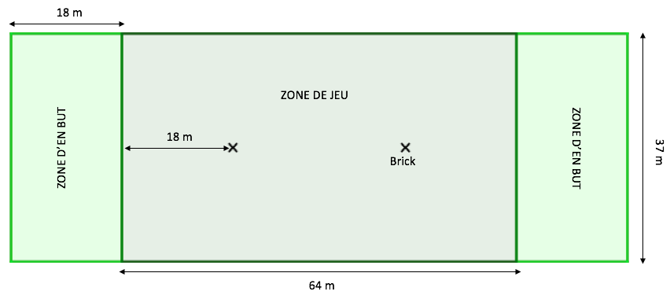

L’Ultimate Frisbee est un sport collectif qui se joue avec deux équipes de sept joueurs chacune et un disque volant. Il est né aux États-Unis dans les années 1960, dans un esprit d’amusement, de liberté et d’innovation. Rapidement, il s’est développé dans les campus universitaires avant de devenir un sport reconnu dans le monde entier. Aujourd’hui, des milliers de clubs existent à travers les cinq continents, et des compétitions internationales sont régulièrement organisées.
L’objectif est de faire progresser le disque de joueur en joueur pour atteindre la zone de but adverse. Une fois le disque attrapé dans la zone, l’équipe marque un point. Les passes peuvent être courtes ou longues, droites ou courbées, ce qui demande à la fois de la stratégie et de la précision. Les enchaînements sont souvent très rapides et spectaculaires, et les plongeons pour attraper le disque en vol rendent le jeu aussi visuel que physique.

Match d'ultimate frisbee.
Photo tirée du site PGUltimate

Logo de la fédération québécoise d'ultimate.
Photo tirée du site de la fédération québécoise d'ultimate.
Un match se joue à 7 contre 7 sur un terrain de 100 mètres de long, divisé en zones d’en-but à chaque extrémité. Le match dure généralement entre 45 minutes et 1 heure, mais certains tournois proposent des formats plus courts. Lorsqu’un joueur attrape le disque, il doit s’arrêter immédiatement : il ne peut pas avancer avec. Il dispose alors de dix secondes pour effectuer une passe. Le marquage est strict et demande beaucoup d’endurance.
Le matériel est simple : un disque de 175g, une tenue de sport confortable et des chaussures adaptées au terrain, souvent avec crampons pour les matchs en extérieur. Contrairement à d'autres sports, il n’y a pas besoin de structures complexes ou d’équipements coûteux. Cela rend l’Ultimate très accessible et facile à organiser, que ce soit dans un parc, sur une plage ou dans une salle.
Terrain d'ultimate d'une surface de 100 m par 37 m.
Photo tirée du site sun-creteil.fr

Le disque officiel de l'Ultimate est L'ultra-Star de 175g.
Photo tirée du site partycity.ca
| Élément | Ultimate Frisbee | Football |
|---|---|---|
| Nombre de joueurs | 7 par équipe | 11 par équipe |
| Arbitre | Pas d'arbitre | Oui |
| Objectif | Attraper le disque dans la zone | Mettre le ballon dans le but |
Le fair play est très important dans les sports de disque.Ce sport se distingue par son esprit sportif et la coopération entre les joueurs. Il n’y a pas d’arbitre : ce sont les joueurs eux-mêmes qui gèrent les règles avec fair-play. Ce principe s’appelle le "Spirit of the Game", une philosophie qui place l’éthique et le respect avant la compétition. Cela crée une ambiance unique sur le terrain, où le dialogue et l’honnêteté remplacent les sanctions automatiques. C’est aussi une excellente école de vie pour les jeunes joueurs.

Photo tirée du site sun-creteil.fr
Pour en savoir plus :